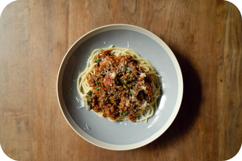

RECETTES TOUTES SAISONS
Spaghetti Bolognaise
- Difficulté:Moyen
- Portions:4
- Temps de préparation:40 min
- Temps de cuisson:1h 20min
Ingrédients:
- 500 g de spaghetti
- 500 g de viande hachée
- 2 gousse d'ail
- 1 g carotte
- 1 oignon
- 1 branche de céleris
- 850 g de tomates
- 1 cuillère à soupe de concentré
- 1 cube de bouillon de volaille
- 1 cuillère à soupe d'huile d'olive
- 1 pincée de sel et de poivre
- 1 cuillère à café de sucre
Etapes:
- Hachez l'ail, l'oignon, puis coupez la carotte et le céleri en petits dés (enlevez les principales nervures du céleri).
- Faites chauffer l'huile dans une casserole assez grande. Faites revenir l'ail, l'oignon, la carotte et le céleri à feu doux pendant 5 min en remuant.
- Augmenter la flamme, puis ajoutez le boeuf. Faites brunir et remuez de façon à ce que la viande ne fasse pas de gros paquets.
- Ajoutez le bouillon, les tomates préalablement coupées assez grossièrement, le sucre et le persil haché. Portez à ébullition.
- Baisser ensuite le feu et laissez mijoter à couvert 1h à 1h30, de façon à ce que le vin s'évapore.
- Faites cuire les spaghetti, puis mettez-les dans un plat.
- Ajoutez la sauce bolognaise.
